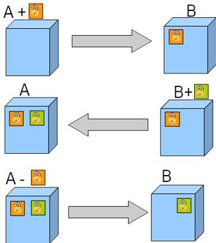
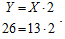
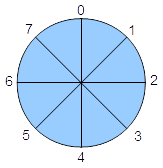
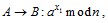
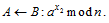
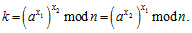
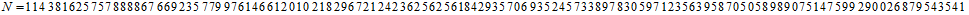

Одной из важнейших проблем в криптографии является проблема распределения ключей. Если с появлением блочного шифра DES и других стойких блочных шифров проблема криптостойкости была решена, то проблема распределения ключей осталась достаточно острой. Традиционно, для обмена ключами требовалось использование дополнительного защищенного канала связи. Наиболее простой и безопасный способ обмена ключами − это использование курьера, но он сопряжен с определенными трудностями. Если государства, крупные компании и организации могут позволить себе использование курьерской доставки ключей, то для небольших компаний и частных лиц этот способ был недоступен из-за высоких расходов. Также этот способ мало подходит при необходимости быстрой смены ключей или организации линии связи в условиях боевых действий, для связи с удаленными объектами, такими как корабли или подводные лодки. Несмотря на сложности, длительное время для обмена ключами использовалась именно курьерская доставка − перфокарты, перфоленты, дискеты, другие виды носителей содержащих ключевую информацию перевозились целыми контейнерами.
Долгое время задача распределения ключей по открытым каналам связи считалась неразрешимой, и надо сказать, что для некоторых организаций (таких, как АНБ) это было выгодно, так как ограничивало использование криптографии частными лицами и облегчало задачу слежки за ними. Поэтому, на начальном этапе двигателями асимметричной или двухключевой криптографии оказались частные лица, которые хотели сделать криптографию доступной для обычных людей, а для этого требовалось решить задачу безопасного распределения ключей. Специалистов, занимающихся этой проблемой, длительное время считали чудаками, кем-то вроде алхимиков, так как эта задача считалась неразрешимой. Тем не менее, несколько энтузиастов продолжали заниматься этой задачей и в конце концов их усилия были вознаграждены.
Уитфилд Диффи − один из энтузиастов-криптографов, в настоящее время работник компании Internet Corporation for Assigned Names and Numbers, в 1970-е годы был независимым криптографом не состоявшим на службе государств и крупных компаний. Его всегда интересовала проблема обмена ключами и он понимал, что тот кто ее решит, войдет в историю как крупнейший специалист по криптографии. Особенно подстегнуло его интерес к этой проблеме появление военной сети ARPANET, на основе которой позднее был создан Internet. Уитфилд Диффи предугадал появление персональных компьютеров, широкое применение таких сервисов как электронная почта, электронных магазинов и т. д., и востребованность криптографии для обеспечения конфиденциальности передачи данных. Оставалась главная проблема — задача распределения ключей с использованием открытых каналов связи. Диффи понимал, что обычные пользователи не в состоянии воспользоваться курьерской доставкой ключей по всей планете и им завладела идея решения этой проблемы [12]. В 1974 году Диффи сделал доклад о проблеме распределения ключей в одной из лабораторий IBM и получил всего один положительный отзыв по его итогам, но из этого отзыва он узнал, что еще один человек серьезно интересуется проблемой распределения ключей. Это был Мартин Хеллман − профессор Стэнфордского университета в Калифорнии. Хеллман проводил исследования в основном за свой счет, и многие его коллеги посмеивались над его работами говоря, что зря он пытается конкурировать с самим АНБ, и что ему не удастся открыть чего-либо значительного. После разговора с Диффи Мартин Хеллман взял его к себе аспирантом, и они продолжили работу над проблемой теперь уже совместно. Через некоторое время к ним присоединился Ральф Меркль.
До этого времени проблема распределения ключей уже имела возраст около 2000 лет и считалась неразрешимой. Началось все с простой аналогии − коробки с замками, которая пересылается по почте. Идея безопасной пересылки коробки без угрозы вскрытия на почте была такова. Изначально, один абонент пересылает другому по почте коробку, на которой висит замок. Второй абонент, получив такую коробку не открывает ее, так как у него нет ключа, а навешивает свой замок и отсылает обратно. Первый абонент получает коробку с двумя замками, снимает свой замок и отсылает обратно. Второй абонент снимает свой замок и читает сообщение. В этой простой схеме показано, как два человека могут обменяться защищенными сообщениями без предварительного распределения ключей (пока для реальных замков) (рис. 5.1). Собственно эта схема и является прообразом двухключевых криптосистем. Если для коробки, запираемой на несколько замков, реализовать обмен по данной схеме достаточно просто, то для электронных сообщений такая схема не работает напрямую. Это объясняется тем, что как правило, в криптографии, если сообщение шифруется несколько раз, то порядок шифрования является важным и влияет на результат. Шифрование для получения корректного результата должно подчиняться принципу стека − последним пришел первым ушел. В данном примере такой порядок нарушается и результат расшифрования станет некорректным. Даже с одноалфавитным шифром замены, не говоря о более сложных алгоритмах, порядок шифрования является критичным, иначе в результате получится случайный текст. При использовании реальных замков порядок не важен, так как при этом не происходит модификации содержимого коробки.
 |
Рис. 5.1. Безопасная пересылка коробки по почте |
Несмотря на то, что принцип навесных замков оказался неприменим на практике, он показал, что такие системы могут существовать, и вдохновил Диффи и Хеллмана на продолжение исследований. В своих исследования они занялись проверкой различных математических функций на возможность использования в качестве шифрующего преобразования. Наибольший интерес для них представляли односторонние функции. Большинство математических функций являются двусторонними, например, операция умножения на 2 легко вычисляется в прямом и обратном направлении:

Так, зная значение x, легко вычислить y и наоборот. Есть функции, которые легко вычислить в прямом направлении, т. е. вычислить Y зная X, но трудно или даже невозможно вычислить в обратном направлении, т. е. вычислить X зная Y. Примером односторонней функции является, например, смешивание красок. Так смешать краски двух произвольных цветов достаточно просто, но разделить уже смешанные краски на первоначальные составляющие задача совсем другого уровня сложности.
Раздел математики, называемый модульной арифметикой, содержит большое количество односторонних функций. В модульной арифметике предметом исследования являются циклически замкнутые конечные группы, аналогичные цифрам на циферблате часов. Сложение по модулю определяется на циферблате как приращение одного значения на число часов, являющихся другим значением.
На рис. 5.2 представлен циферблат часов для операций по модулю 8.
 |
Рис. 5.2. Аналог операций по модулю 8 |
Например, 5+5=2 mod 8, т. е. результат является остатком от деления результата операции на величину модуля. Функции, определенные в модулярной арифметике, зачастую ведут себя хаотичным образом, что и делает их односторонними. Это становится очевидным, если сравнить их обычными функциями, двусторонние функции из обычной арифметики часто становятся односторонними в модулярной. Возьмем для примера функцию y=3x. Аргумент и значение функции связаны между собой таким образом, что с увеличением аргумента увеличивается значение функции. Если известно, что результат функции равен 81, то мы можем предположить, что значение x было равно 3, вычислить функцию от 3, получиться 27 и по тому, что получилось значение меньше заданного, понять, что аргумент следует увеличить. Следующее значение будет 4, что и даст верный ответ. Аргумент равный 5 даст значение 243, т. е. больше искомого, что говорит о том, что аргумент слишком велик. В модульной арифметике отсутствует монотонное возрастание функции при возрастании аргумента. Так, например, известно, что 3x mod 7=1 и требуется найти значение x. Возьмем наугад x=5 и получим 35 mod 7=5, т. е. больше чем нужно, напрашивается решение уменьшить аргумент, но правильный ответ x=6.
Отличие в поведении одной и той же функции в обычном и модульном виде
x |
1 |
2 |
3 |
4 |
5 |
6 |
3x |
3 |
9 |
27 |
81 |
243 |
729 |
3x mod 7 |
3 |
2 |
6 |
4 |
5 |
1 |
Из табл. 5.1 очевидно хаотичное поведение функции y = 3x mod 7.
Это приводит к тому, что зачастую единственным способом выполнить обратное преобразование является перебор всех возможных значений аргумента до нахождения верного значения. Вручную можно проверить только совсем небольшие числа, с помощью калькулятора − чуть большего размера, с использованием компьютера − еще большего размера. Однако при использовании достаточно больших значений модуля и аргументов перебор, даже с применением огромных вычислительных ресурсов, не способен дать результат за приемлемое время.
После двух лет исследований в области модульной арифметики и односторонних функций Мартин Хеллман натолкнулся на алгоритм решения задачи защищенного обмена ключами. Идея Хеллмана основывалась на использовании простой функции:
y=ax mod n.
При этом a и n являются открытыми параметрами алгоритма. Этот алгоритм применяется до настоящего времени и является основой большинства современных протоколов открытого обмена ключами. Он состоит в следующем: абоненты A и B, которые хотят установить общий ключ, генерируют секретные значения x1, x2 и обмениваются значениями:


Общий ключ вычисляется по формуле

Если злоумышленник перехватит значения из канала связи, даже при условии, что ему известны a и n, то для нахождения ключа ему надо решить задачу обращения односторонней функции возведения в степень по модулю. Эта задача носит название задачи дискретного логарифмирования по аналогии с обычным логарифмом, но с использованием модульной арифметики и имеет экспоненциальный рост сложности с ростом размера модуля и при правильном выборе параметров алгоритма. Эта схема называется протокол обмена ключами Диффи − Хеллмана и в модифицированном виде используется и сегодня.
Самым важным в этой схеме является возможность получения общего секретного ключа с использованием обычных каналов связи. Таким образом задача, более 2000 лет считавшаяся неразрешимой, была успешно решена.
Открытие схемы Диффи − Хеллмана было гигантским скачком в криптографической науке, но система обмена сообщениями была довольно несовершенной. Она требовала двустороннего обмена сообщениями, что не всегда возможно, например, при обмене почтовыми сообщениями, которые часто обрабатываются с большой задержкой. Фактически схема Диффи-Хеллмана показала принципиальную возможность решения проблемы защищенного обмена с использованием несекретных каналов связи. Дальнейшим развитием двухключевых криптосистем стала разработка практических схем, удобных для использования в реальных каналах связи.
Уитфилд Диффи развил идею Мартина Хеллмана для обмена ключами, рассмотренную ранее, и сформулировал само понятие асимметричного алгоритма шифрования, использующего два разных ключа — один для зашифрования, другой для расшифрования. Эта концепция, даже не подкрепленная практическим примером, была революционной для своего времени и имела огромное значение. Он показал направление, в котором необходимо вести исследования для создания практического асимметричного алгоритма, и обозначил методику применения таких алгоритмов на практике. Общая схема асимметричного шифрования с тех пор практически не изменилась и представлена на рис. 5.3.
Важным отличием этой схемы является отсутствие необходимости обмена сообщениями между абонентами. Надо просто получить требуемый открытый ключ из открытой базы данных. Каждый может с использованием открытого ключа зашифровать информацию, но только владелец секретного ключа может выполнить расшифрование информации. При этом злоумышленник, имея все данные перехваченные из канала связи, не в состоянии получить доступ к информации.
Возвращаясь к бытовой аналогии с замками − каждый способен закрыть самозащелкивающийся замок, т. е. выполнить зашифрование, но открыть его может только один человек − владелец ключа. Так можно представить, что в виртуальном мире можно изготовить любое количество дубликатов самозащелкивающихся замков, которыми может воспользоваться любой, но каждый из них отпирается одним ключом, который есть только у владельца такого замка.
Итак, Уитфилд Диффи предложил использовать для реализации такой схемы специальный тип обратимой функции − функцию, которая может быть обратимой при условии знания некоторой дополнительной информации. Разработанные им теоретические основы двухключевой криптографии были опубликованы в 1975 году, но подходящая схема так и не была найдена. Только в 1977 году Рон Ривест, Ади Шамир и Леонард Адлеман представили практический алгоритм шифрования RSA, построенный по схеме, предложенной Уитфилдом Диффи, и применяющийся до настоящего времени. Говоря о стойкости RSA можно привести небольшой пример. В 1977 году Мартин Гарднер написал статью о шифре RSA, в которой предложил читателям решить задачу взлома шифра RSA с известным открытым ключом длиной 129 десятичных цифр. Требовалось разложить на простые множители число N, где
,
причем призом были 100 долларов. Задача была решена только через 17 лет в 1994 году вычислительной сетью из 600 компьютеров. При этом в этой задаче использовались очень небольшие, по сравнению с современными версиями, размерности чисел. Сегодня, несмотря на многократно возросшие вычислительные мощности, алгоритм RSA остается устойчивым и недоступным для практического взлома при правильном выборе его параметров.
Позже стало известно, что на самом деле двухключевая криптография была открыта несколько ранее британским криптографом Джеймсом Эллисом. Он также работал над задачей безопасного распределения ключей, так как затраты на распределение ключей в это время были огромны и сильно ограничивали использование криптографии, в том числе в королевских вооруженных силах. Он исходил из идей того, что один из абонентов должен добавить к сообщению некий шум, устранить который сможет только он сам. Он самостоятельно пришел к тому же выводу, что и Уитфилд Диффи, это произошло в 1969 году, т. е. шестью годами ранее. Джеймс Эллис сформулировал принцип работы двухключевых систем, но сам, не будучи математиком, не смог найти нужную функцию. Это сделал британский математик Клиффорд Кокс в 1973 году. Он разработал систему шифрования, аналогичную криптосистеме RSA, опередив ее на четыре года. Так как Кокс и Эллис работали в британской спецслужбе, их идеи остались недоступны для общественности и были оценены только в узком кругу их коллег по работе. Фактически, они немного позднее были заново открыты их коллегами по ту сторону океана. Так Эллис и Кокс пополнили список британских криптографов, не оцененных по заслугам при жизни, в этом списке также взломщик шифра Виженера Чарльз Бэббидж и один из взломщиков «Энигмы» − Алан Тьюринг.